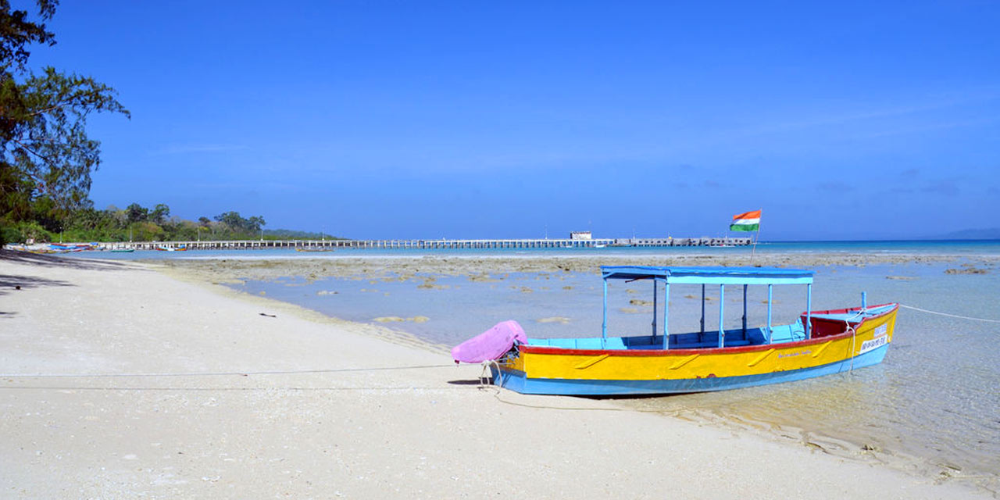
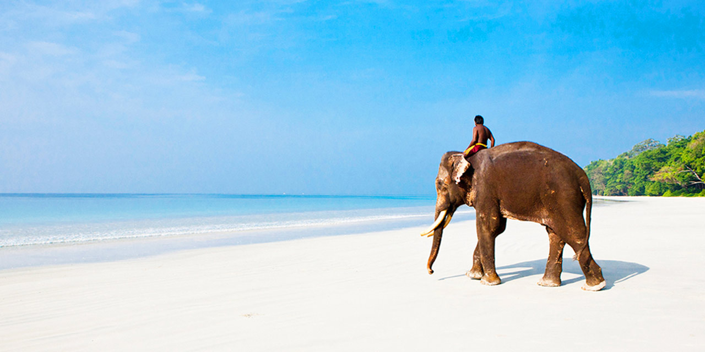
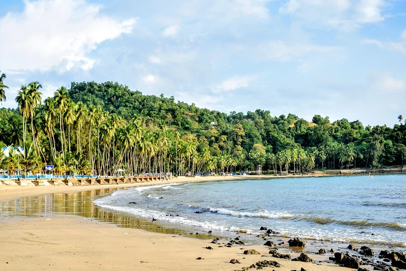
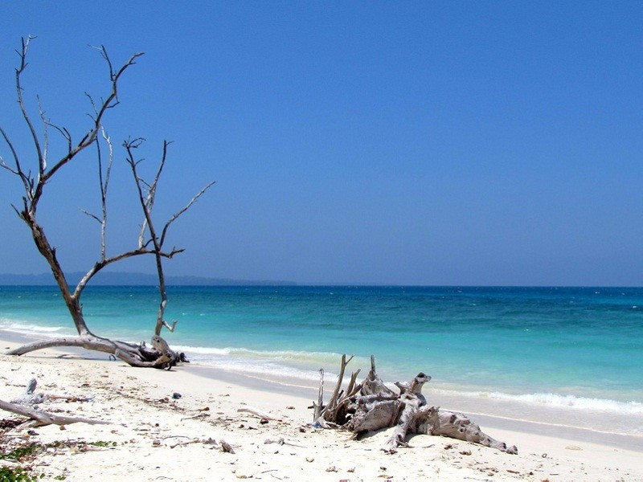
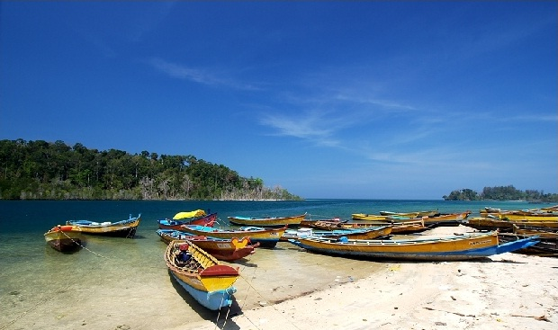
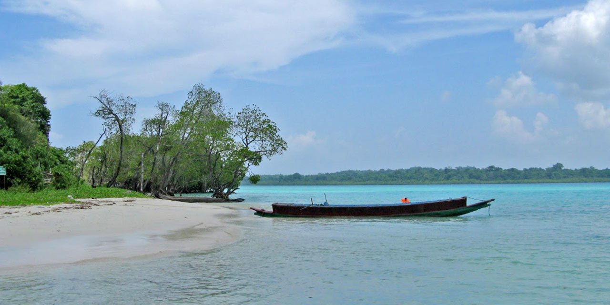
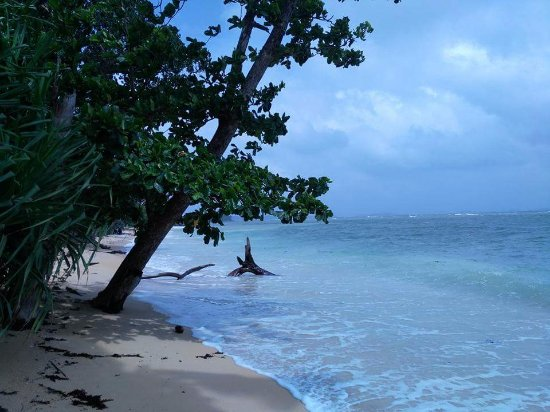
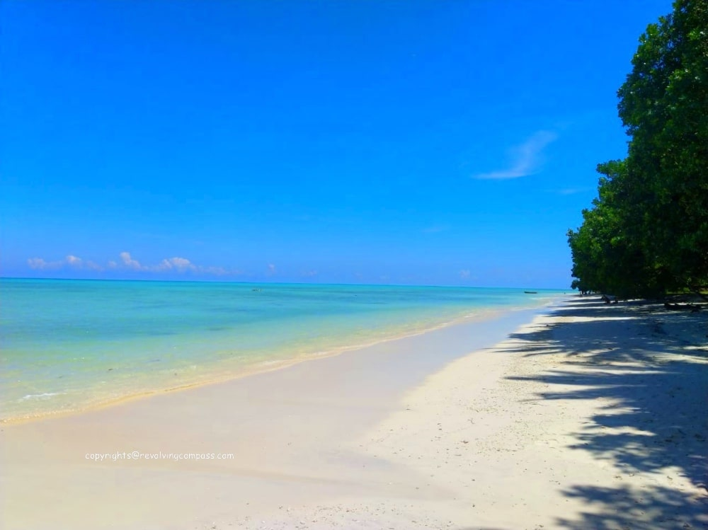

1.

Radhanagar Beach
Tucked in Havelock Island, Radhanagar Beach is regarded as the best beach in India. It is a pristine
stretch of sand backed by turquoise water and lush forest.
Radhanagar Beach is commonly called Beach
No.
7 and it looks straight out of the postcard.
Times Magazine has awarded it the title of the ‘7th
best
beach in the world’.
MAP
2.
Bharatpur Beach
Bharatpur Beach is simply the best beach in Neill Island, that is both tranquil and picturesque.
Located just 500 meters from the Neil Island jetty it is a perfect place to enjoy time with your friends
and family.
MAP
3.

Laxmanpur Beach
Located 39 km from Port Blair and two km from Neil Jetty, Laxmanpur beach is emerging as one of the most
popular places to visit in Andaman and Nicobar Islands.
The white sandy beach is perfect for
hanging out by yourself, enjoying the beauty of natural vistas around, and soaking in the Sun.
MAP
4.
Elephant Beach
Elephant Beach is one of the key attractions located on Havelock Island, in Andaman and Nicobar.
It
takes around twenty minutes to get to the beach on a ferry, and the sight of the beach alone is enough
to make you fall in love with this place.
The beauty of the clean shores, unaffected by man-made
pollution.
MAP
5.
Corblyn's Cave
One of the nearest Beaches to Capital of Andaman is Corbyn’s Cave beach.
The shape of this beach is
little curved and it is picturesque with a palm groves background.
Corbyn’s Cave beach is ideal
for
strolling, picnicking, sunbathing and relaxing
MAP
6.
Kalapathar Beach
Kalapathar beach is a long stretch of white silky sand with big black rocks beside the blue sea.
It
is situated on one corner of Havelock and is a continuation of beach No. 5.
The beach can get a
bit crowded in high season, but if you walk further to the south you’ll find yourself completely alone.
MAP
7.
Wandoor Beach
The Wandoor Beach is located 25 KMs from the Airport and is one of the major attractions in Port
Blair.
It comes under the Mahatma Gandhi Marine National Park area.
With sustainable tourism and protection of the forests under the Andaman Islands Administration,
the beach is surrounded by a vast variety of fauna, which covers it from three sides.
MAP
8.
Govind Nagar Beach
Govind Nagar Beach Havelock Island is yet another jewel.
It is famous for the fact that at one
side it showcases the elements of the ethereal sphere of the Havelock Island with the turquoise blue
water, silvery sand, and tropical flora and fauna and on the other side it also offers the water sports
like scuba diving, snorkelling, & swimming.
MAP
9.
Khurmadera Beach
Khurmadera Beach is one of most cleanest beaches in Andaman.
The beach is clean, the sand is fine,
the water is pristine.
Since it is not as popular as the other beaches, the water is cleaner
and it
is way more secluded than othr beaches on this list.
MAP
10.
Vijaynagar Beach
If there is a paradise on this planet, it's nowhere else than the Vijaynagar Beach, which is one of the
less frequented areas of Andaman and Nicobar Island.
Palm-fringed coastline outstretches your
visual range and creates a stunning contrast of green and blue on the canvas of nature.
MAP